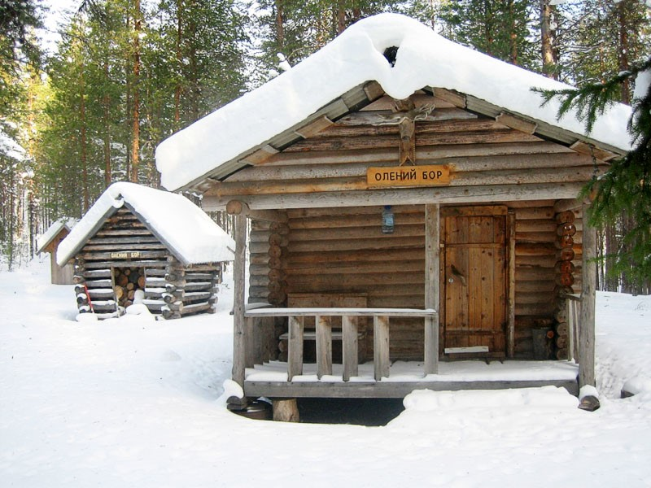
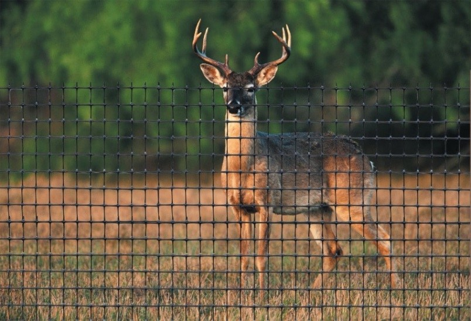
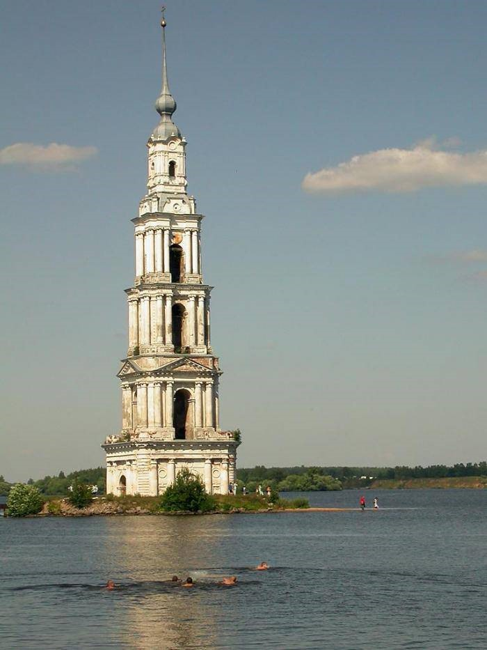
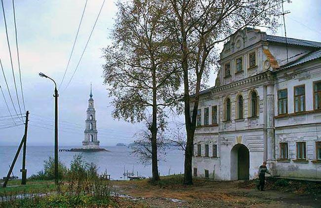
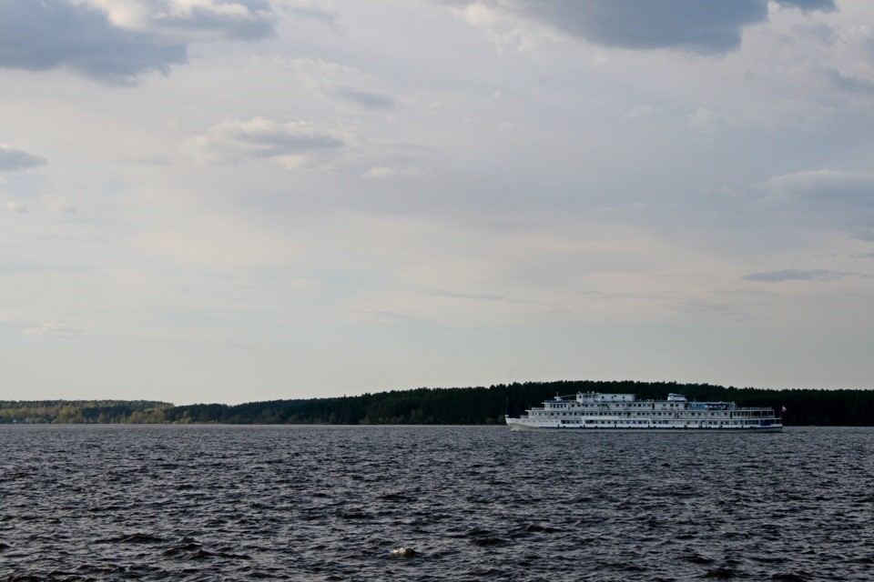

Калязин
Олений бор.
 
Олений бор рядом с деревней Мицеево (Калязинский район). Это кемпинг с потрясающей природой, где есть даже пляж. Но главное, что привлекает особенно семьи с детьми – это возможность “пообщаться” с живыми оленями, покормить их с рук.
Угличское водохранилище
 олокольня Никольского собора
У́гличское водохрани́лище — водохранилище руслового типа на реке Волге расположенное в пределах Угличского района Ярославской области и Кимрского, Калязинского и Кашинского районов Тверской области Создано в 1939 году с постройкой Угличской ГЭС в Угличе. Водохранилище используется для энергетики, судоходства, рыболовства, а также для водоснабжения. На берегах расположены города Калязин и Кимры.
Угличское водохранилище руслового типа, вытянуто на 146 км, осуществляет сезонное регулирование стока. Высота над уровнем моря — 113 м
14 сентября 1935 года Совет народных комиссаров СССР и ЦК ВКП(б) приняли постановление о начале строительства Рыбинского и Угличского гидроузлов. Построено в 1939—1943 годах. К 1947 году завершилось заполнение водохранилища.
В общей сложности при создании Угличского водохранилища затоплению подверглись около 100 деревень и сёл, 30 городских и сельских храмов
